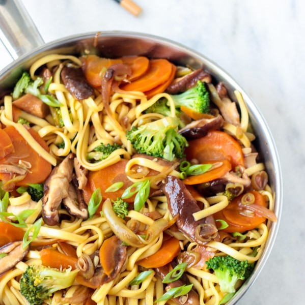
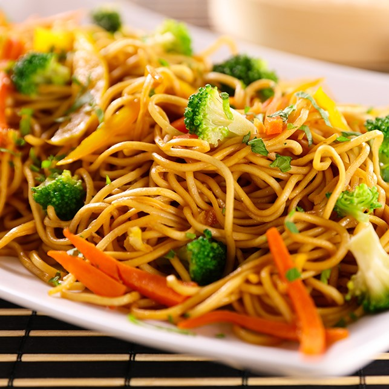

Ingredientes
- 300 g de macarrão para yakisoba cozido
- 1 cebola grande picada em pedaços médios
- 1 colher (sopa) de óleo
- 1/2 maço pequeno de brócolis
- 1/2 maço pequeno de couve-flor
- 250 ml de molho para yakissoba
- 6 colheres (sopa) de molho shoyu
- 400 g de tirinhas de carne (mignon, patinho ou alcatra) ou frango
- 100 g de champignon
- 1 cenoura cortada em diagonal
- 4 folhas de acelga cortadas na diagonal
Modo de Preparo
- Em uma panela grande, coloque o óleo e refogue a cebola.
- Acrescente a proteina, o brócolis, a couve-flor, a cenoura, a acelga e o champignon e tempere com o shoyu.
- Despeje o molho para yakisobae deixe cozinhar até que os legumes fiquem cozidos.
- Adicione o macarrão, misture bem e sirva logo em seguida.
YAKISOBA
Os primeiros vestígios referentes ao prato tem registro entre os séculos 17 e 19. Mas foi somente no século 20, logo após o final da Segunda Guerra Mundial, que o prato chinês chamado chao men ganhou uma nova versão e se popularizou no Japão. Na época, por ser um alimento prático e barato, ele era capaz de satisfazer a fome do povo quando era necessário fazer o racionamento de alimentos.


Você sabia que: A palavra Yakisoba (yaki = assar, grelhar, soba = macarrão), em seu significado literal é “macarrão frito”

